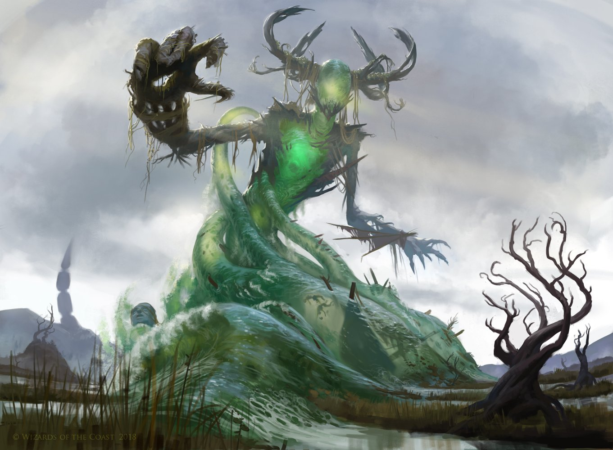
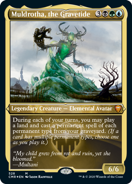

Fun low level commander jank
So most people as soon as they see Muldrotha they think of degenerate infinate combos and game breaking interactions. This is not that. The idea behind this deck is to be able to sit at all but the most compatative tables and be able to play the game. Some things have better, cheaper, or more game breaking conterparts but they were removed or replaced to lower the power level of the deck. Who is gana have fun spending 10 minutes setting up a game shuffeling deciding who goes first and playing the game if you lose on turn 5 or are locked out of the game entirly. I know I play to have fun and play magic not sit and watch someone play with themselfs.